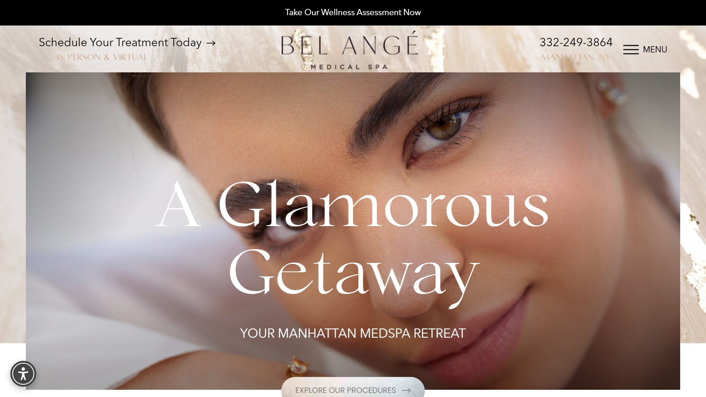
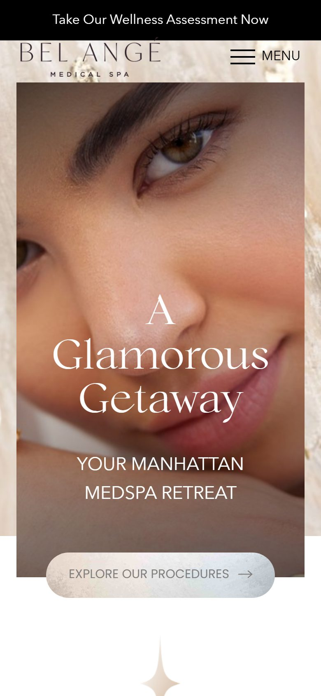

What this looks like built
Two working examples — not mockups. Both are live and clickable.


Private website conversion audit
An independent review of how the website performs for a first-time, full-fee patient — what it does well, and where attention is lost before a booking is made.
Bel Angé has assets many comparable Manhattan practices lack: real online booking, a genuinely well-organised treatment architecture across six categories, and a 5.0 public rating from 52+ reviews. The foundations are in place.
The largest opportunity is that the first screen sells a spa retreat while the treatment menu sells medical aesthetics — Sculptra, PRP, Sylfirm X, EmSculpt Neo, NAD peptide therapy. A patient arriving for injectables meets the headline “A Glamorous Getaway” and a single button reading “Explore Our Procedures.” The strongest trust asset — that 5.0 rating — sits in the footer, far from the moment of hesitation.
Evidence limitation: this review covers the homepage on desktop and mobile plus publicly visible information. Treatment-page depth and technical performance were not assessed, so the score is normalised across the six categories that were. Nothing here uses private analytics, and no traffic or revenue figures have been estimated.
Normalised across six assessed categories (90 points available). Treatment content and technical performance were not reviewed and are excluded rather than guessed. A score in this band means the site works, but loses attention or trust at identifiable moments — not that the practice is underperforming commercially.
| Category | Score | Status | One-line finding |
|---|---|---|---|
| First impression & positioning | 11/20 | Gap | Headline positions leisure; the treatment menu is medical. |
| Trust & authority placement | 9/20 | Structural | No clinical credentials on the homepage; 5.0 rating in the footer only. |
| Booking journey & conversion | 12/20 | Gap | Online booking exists, but the hero CTA is a browse action. |
| Patient decision psychology | 8/15 | Gap | Several competing next steps; no single obvious action. |
| Mobile experience | 5/10 | Gap | Neither a booking button nor a phone number above the fold. |
| Local / public signals | 3/5 | Solid | Strong rating; one displayed number worth confirming. |
| Treatment content quality | — | Not assessed | Excluded from the score. |
| Technical / performance | — | Not assessed | Excluded from the score. |
These are real advantages, and several of the recommendations below are about making them easier to find rather than building anything new.


Evidence: The homepage headline reads “A Glamorous Getaway”, with the subheading “Your Manhattan MedSpa Retreat”. The treatment menu includes Sculptra, PRP, Sylfirm X, EmSculpt Neo and NAD peptide therapy.
Why it matters to a full-fee patient: Someone researching injectables is making a medical decision and is looking for clinical confidence. “Getaway” and “retreat” are the language of leisure. The practice may be filtering out precisely the patient its treatment menu is built to serve.
Recommended: Keep the elegance, add the substance. A headline that names the category and the standard — the sort of thing a patient could repeat to a friend — with “A Glamorous Getaway” demoted to supporting copy.
Evidence: The founder, Angelica Ricciardi, is featured with a biography describing a background in the medical field. No clinical qualification, licence or supervising physician is stated on the homepage.
Why it matters to a full-fee patient: For injectables, the decisive question is who is holding the needle and what they are qualified to do. A patient who cannot answer that on the site will usually answer it by choosing a practice where they can.
Recommended: Name the treating practitioner or supervising physician near the top of the page, with the qualification stated plainly and a real photograph. This is the single highest-value change available and it requires no redesign.
Evidence: The hero button reads “Explore Our Procedures”. “Schedule Your Treatment Today” appears as small text top-left, visually subordinate to the logo and the phone number. A black banner above everything offers “Take Our Wellness Assessment Now”, and elsewhere the page offers “New Patients 10% Off First Treatment – Book Today” and “Book Your Appointment Now”.
Why it matters to a full-fee patient: Four different next steps compete on one page. When a visitor has to choose which action is the real one, the common outcome is none of them.
Recommended: One primary booking button in the hero, styled unmistakably as the main action. Keep the wellness assessment as a secondary text link for the undecided — it is a good idea placed too loudly.
Evidence: At 390×844 the first screen shows the assessment banner, the logo, a hamburger menu, the hero image, the headline and “Explore Our Procedures”. No booking button and no tappable phone number appear until the visitor scrolls.
Why it matters to a full-fee patient: Aesthetic research happens on phones, often in the evening. A visitor who has decided in the first few seconds has nothing to act on.
Recommended: A sticky footer bar on mobile with “Book” and a tap-to-call number. It is one of the smallest changes on this list and usually the most noticeable.
Evidence: “5.0 from 52+ Reviews” appears in the footer. No review text or patient wording appears near the hero or beside any booking action, and the desktop navigation is collapsed behind a “MENU” control even at 1366px, so the well-built category structure is hidden at first contact.
Why it matters to a full-fee patient: Proof only works where doubt happens — beside the price, beside the treatment, beside the booking button. In the footer it reaches the visitors who were already convinced.
Recommended: Lift the rating next to the primary CTA, place two or three short quotes on the highest-value treatment pages, and expose the top-level categories in the desktop navigation.
Evidence: The number rendered in the site header is 332-249-3864. That number does not appear anywhere in the page source, while 855-594-4300 appears 18 times. This is the signature of a number being inserted by a script after the page loads.
Interpretation: This is usually deliberate — dynamic number insertion for call tracking — and is not an error in itself. It is worth confirming that every displayed number routes correctly, and that the number search engines and directories record matches the Google Business Profile, since mismatches between listings can affect local visibility.
| Principle | In plain English | What the site shows |
|---|---|---|
| Familiarity Jacob's Law | People expect a site to behave like the others they use. | Collapsing the desktop navigation behind “MENU” at 1366px is unusual for a clinic site and hides a category structure that is genuinely good. |
| Reachability Fitts's Law | Important actions should be big and easy to thumb. | “Explore Our Procedures” is a generous tap target — the mechanic is right, it is pointed at browsing rather than booking. |
| Proximity of proof | Reassurance has to sit where the doubt is. | The 5.0 rating is in the footer; there is no proof beside the hero or any booking action. |
| Authority | Real expertise, visible near decisions. | No clinical credential appears on the homepage, and none near a booking action. |
| Decision clarity | One obvious next step. | Four competing actions: wellness assessment, explore procedures, schedule treatment, 10% off booking. |
| Helpful defaults | Sensible pre-selections that serve the patient. | Offering in-person and virtual consultation is a good default that lowers the cost of saying yes. |
| Believability Pratfall Effect | Balanced, realistic communication is trusted more than perfection. | Language is aspirational throughout. Realistic notes on suitability, downtime or who a treatment is not for would raise credibility. |
This is a model, not a measurement. Every figure below starts as an illustrative placeholder — replace them with your own numbers and the scenarios update immediately. Nothing here is drawn from your analytics, and no result is predicted or guaranteed.
Proposed enquiry rate 2.0%
—
additional first-visit revenue / month
Proposed enquiry rate 2.5%
—
additional first-visit revenue / month
Proposed enquiry rate 3.0%
—
additional first-visit revenue / month
Every step, shown in full:
current enquiries = visitors × current rate → —
improved enquiries = visitors × proposed rate
additional attended = (improved − current) × booking % × attendance %
additional revenue = additional attended × average first-visit value
Only the proposed enquiry rate changes between the three scenarios; every other input stays as you entered it. This is an illustrative scenario built on stated assumptions — not a forecast, a projection or a guarantee. Actual results depend on factors no website review can measure.
| Window | Focus | Actions |
|---|---|---|
| Days 1–14 | Quick wins | Single primary booking CTA in the hero. Sticky mobile book/call bar. Practitioner name and qualification above the fold. Confirm the displayed phone number routes correctly and matches your listings. |
| Days 15–45 | Trust & conversion | Move the 5.0 rating beside the primary CTA. Add patient quotes to the highest-value treatment pages. Expose top-level categories in the desktop navigation. Add realistic suitability and downtime notes. |
| Days 46–90 | Authority & measurement | Practitioner authority content. Consistent listings across directories. Post-treatment review requests. Measure enquiry-to-booking so the figures in the calculator above become yours rather than illustrative. |
This review is based on the public homepage of belangemedspa.com viewed on 12 August 2026 at 1366×768 and 390×844, page source retrieved the same day, and publicly visible business information. Treatment-page depth and technical performance were not assessed and are excluded from the score rather than estimated; the total is normalised across the six categories reviewed (90 points available).
No private analytics, Google Business Profile insights, booking data or revenue figures were accessed, and none have been estimated. Findings labelled Observed are directly visible; findings labelled Interpretive are professional assessment and are identified as such. No legal, HIPAA, medical board or clinical compliance judgement is offered or implied — those require professional review. Figures in the growth scenario are illustrative placeholders supplied by this report, not measurements of your practice.
Most of what is above can be done by your existing web team, and this report is yours to use whether or not we ever speak.
Where the gaps are structural rather than cosmetic — booking that lives on someone else's platform, trust signals with nowhere to sit, no loop that brings a patient back after treatment — those are the problems we build for.
Two working examples — not mockups. Both are live and clickable.